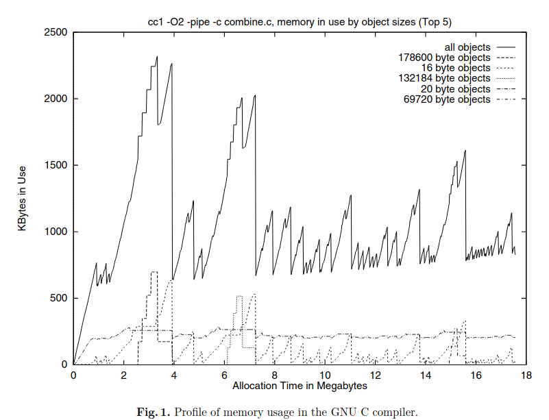
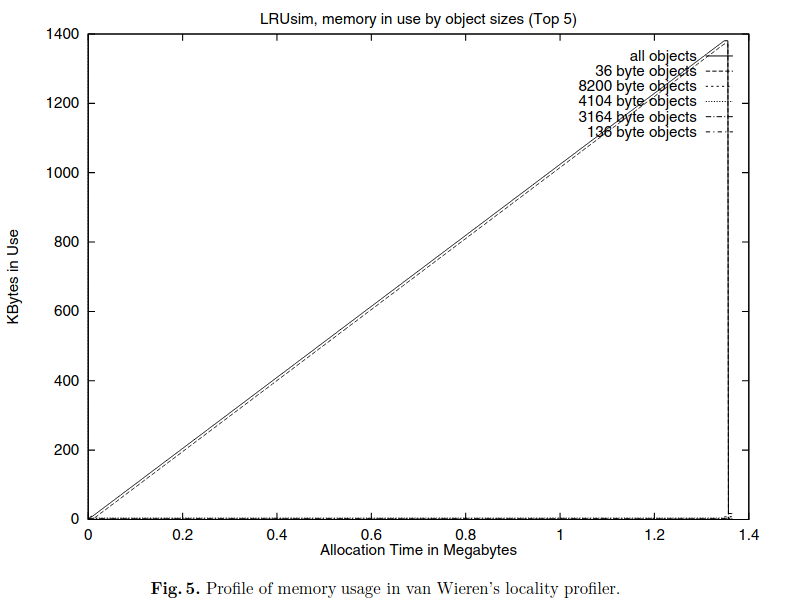
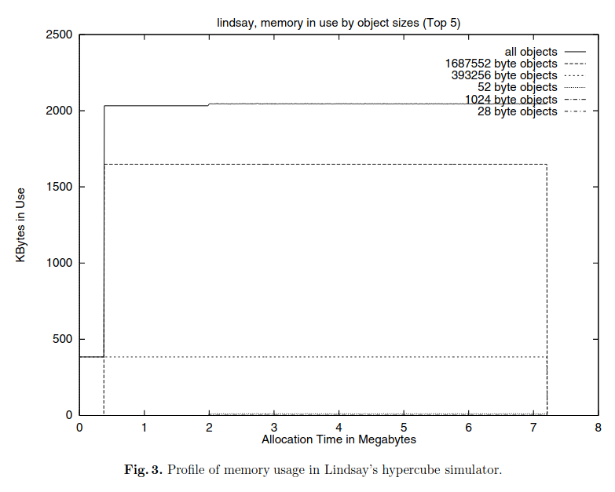

Na użytek przydziału i zwalniania stron pamięci w przestrzeni użytkownika systemy uniksowe
udostępniają wywołania systemowe sbrk(2) oraz parę mmap(2) i munmap(2). Jakie są wady stosowania sbrk
do zarządzania rozmiarem sterty przez biblioteczny algorytm zarządzania pamięcią malloc(3)? Jak można
to poprawić przy pomocy mmap i munmap? Kiedy procedura free może zwrócić pamięć do jądra?
Wykonajmy następujący program, który alokuje dużą ilość pamięci
1 #include <stdio.h>
2 #include <stdlib.h>
3 int main() {
4 int *a = malloc(1024*1024*1024);
► 5 int *b = malloc(1024);
6 }
pwndbg> print a
$1 = (int *) 0x7fffb7c00010
pwndbg> vmmap
LEGEND: STACK | HEAP | CODE | DATA | RWX | RODATA
Start End Perm Size Offset File
0x555555554000 0x555555555000 r--p 1000 0 /tmp/a.out
0x555555555000 0x555555556000 r-xp 1000 1000 /tmp/a.out
0x555555556000 0x555555557000 r--p 1000 2000 /tmp/a.out
0x555555557000 0x555555558000 r--p 1000 2000 /tmp/a.out
0x555555558000 0x555555559000 rw-p 1000 3000 /tmp/a.out
0x555555559000 0x55555557a000 rw-p 21000 0 [heap]
0x7fffb7c00000 0x7ffff7c01000 rw-p 40001000 0 [anon_7fffb7c00]
Jak widzimy nasza duża alokacja dostała swoje własne mapowanie.
Jak widzimy kolejna, mniejsza, alokacja znajduje sie już na standardowej
stercie.
Jeśli teraz zwolnimy dużą alokacje, to zostanie ona oddana do systemu
poleceniem munmap.
Jeśli byśmy zaalowali dużo pamięci na początku sterty, po czym zwiększyli jej rozmiar za pomocą sbrk, zaalokowali mniejszy blok i zwolnili duży blok, to powstałaby luka, ponieważ niemielibyśmy jak oddać tej pamięci do systemu.
duzy=malloc(1024*1024*1024)
--------------------
| |
| Duzy blok |
| |
--------------------
maly=alloc(1024):
--------------------------------
| | |
| Duzy blok | Maly blok |
| | |
--------------------------------
free(duzy)
--------------------------------
| | |
| Wolny blok | Maly blok |
| | |
--------------------------------
Albo munmap albo gdy zwolnimy ostatni blok na stercie.
Można wtedy wykonać sbrk z wartością ujemną.
Zadanie 2. Wyjaśnij różnicę między fragmentacją wewnętrzną i zewnętrzną.
Czemu algorytm malloc nie można stosować kompaktowania?
Na podstawie [6, §2.3] opowiedz o dwóch głównych przyczynach występowania fragmentacji zewnętrznej.
Wewnętrzna gdy mamy niewykorzystną przestrzeń w środku bloku
Caused by
Overhead of maintaining heap data structures
Padding for alignment purposes
Explicit policy decisions
(e.g., to return a big block to satisfy a small request)
Zewnętrzna gdy mamy dużo przerw między blokami, które nie są na tyle duże, aby je wykorzystać, ale byłyby na tyle duże, gdyby ta wolna pamięć była po sobie.
Bo pointery się popsują
Fragmentation is caused by isolated deaths
W skrócie, w zbiorze wielu zaalokowanych bloków zwolniony zostaje jeden blok a reszta nie.
Istotne jest więc czy obiekty leżą obok siebie i czy są zwalniane w podobnym czasie.
Fragmentation is caused by time-varying behavior.
Program może alokować pamięć na różne sposoby w czasie wykonania
programu.
Na przyklad na starcie moze zaalokowac duze obiekty, takie jak jakis
kontekst i bufory, a potem mniejsze obiekty. Alokator powinien radzić
sobie z takimi scenariuszami.
Zadanie 3. Posługując się wykresem wykorzystania pamięci w trakcie życia procesu opowiedz o trzech wzorcach przydziału pamięci występujących w programach [6 , §2.4]. Na podstawie paragrafu zatytułowanego
„Exploiting ordering and size dependencies” wyjaśnij jaki jest związek między czasem życia bloku, a jego rozmiarem?
Wyjaśnij różnice między politykami znajdowania wolnych bloków: first-fit, next-fit i best-fit.
Na podstawie [6, §3.4] wymień ich słabe i mocne strony

Peaks. Many programs use memory in bursty pat-
terns, building up relatively large data structures
which are used for the duration of a particular
phase, and then discarding most or all of those
data structures. Note that the “surviving” data
structures are likely to be of different types, be-
cause they represent the results of a phase, as op-
posed to intermediate values which may be rep-
resented differently. (A peak is like a ramp, but
of shorter duration.)
Widzimy sporo peaków

Ramps. Many programs accumulate certain data
structures monotonically over time. This may be
because they keep a log of events, or because
the problem-solving strategy requires building a
large representation, after which a solution can
be found quickly.

Plateaus. Many programs build up data struc-
tures quickly, and then use those data structures
for long periods (often nearly the whole running
time of the program)
Bloki zaalokowane w tym samym czasie o tym samym rozmiarze mają spore
prawdopodobieństwo, że zostaną również zwolnione w tym samym
czasie.
Opłaca się więc nam alokować bloki tego samego rozmiaru ciągle
(continuous) w pamięci, aby zostały zwolnione jednocześnie.
znajduje pierwszy wolny blok wystarczajaco duzy, zeby zmiescic
request. Jak blok jest wiekszy niz request to blok jest
splitowany.
Powoduje powstanie wielu malych wolnych blokow na poczatku, co wydluza
czas oczekiwania na wiekszy request.
first-fit ale rozpoczyna szukanie od ostatniej pozycji na ktorej
skonczyl.
Szybciej znajdzie wolny blok, ale spowoduje fragmentacje, bloki z
roznych faz programu przeplataja sie, wiec pewnie tez nie bedzie mozna
ich złączyć i jest gorsze locality
Szuka jak najlepszego bloku spelniajacego request. Musi przeszukać
całą listę, co zajmuje dlugo, chyba ze znajdzie blok o idealnym
rozmiarze.
Do tego jesli znajdzie blok tylko troche wiekszy, to tworzy bardzo male
wolne bloki. Poniewaz takie skanowanie calej listy zajmuje dlugo czasu,
to slabo sie nadaje dla programow, ktore maja wiele zwolnionych
blokow.
Zadanie 4. Algorytm przydziału pamięci udostępnia funkcje o sygnaturach «alloc: words -> id» i «free:
id -> void» i ma do dyspozycji obszar 50 słów maszynowych. Funkcja «alloc» zwraca bloki o identyfikato-
rach będącymi kolejnymi literami alfabetu. Zwracane adresy są podzielne przez rozmiar słowa maszynowego.
Implementacja używa dwukierunkowej listy wolnych bloków oraz boundary tags bez optymalizacji. Wyszuki-
wanie wolnych bloków działa zgodnie z polityką best-fit. Operacja zwalniania gorliwie złącza bloki i wstawia
wolne bloki na koniec listy. Posługując się diagramem z wykładu wykonaj krokową symulację algorytmu
przydziału pamięci dla poniższego ciągu żądań. Należy wziąć pod uwagę miejsce zajmowane przez struktury
danych algorytmu przydziału oraz nieużytki.
alloc(4) alloc(8) alloc(4) alloc(4) alloc(10) alloc(6)
free(C) free(B) free(F) alloc(6) free(D) alloc(18)
Czy coś by się zmieniło, gdyby algorytm wykorzystywał politykę first-fit?
Wskazówka: Wolny blok można podzielić na dwa mniejsze pod warunkiem, że obydwa mogą pomieścić węzeł listy wolnych
bloków. W przeciwnym wypadku nie można tego zrobić i trzeba wziąć blok, który jest dłuższy o mały nieużytek
Na chłopski rozum
Rozważmy algorytm kubełkowy [ 6, §3.6] (ang. segregated-fit) przydziału pamięci z gorliwym złączaniem wolnych bloków.
Porównaj go z algorytmem, który zarządza jedną listą wolnych bloków zgodnie ze strategią best-fit.
Jak przebiegają operacje «malloc» i «free»?
Co robi «malloc», gdy na danej liście nie ma wolnego bloku żądanego rozmiaru?
Gdzie należałoby przechowywać węzeł strażnik (ang. sentinel node) każdej z list wolnych bloków?
Rozważ zastosowanie leniwego złączania wolnych bloków w algorytmie kubełkowym przydziału pamięci – jakie problemy zauważasz?
Dłuższy czas przydzielania pamięci dla większych bloków. Muszą one sprawdzić wszystkie małe wolne bloki i dopiero potem przejsc przez procedure złączania i uzyskac blok.